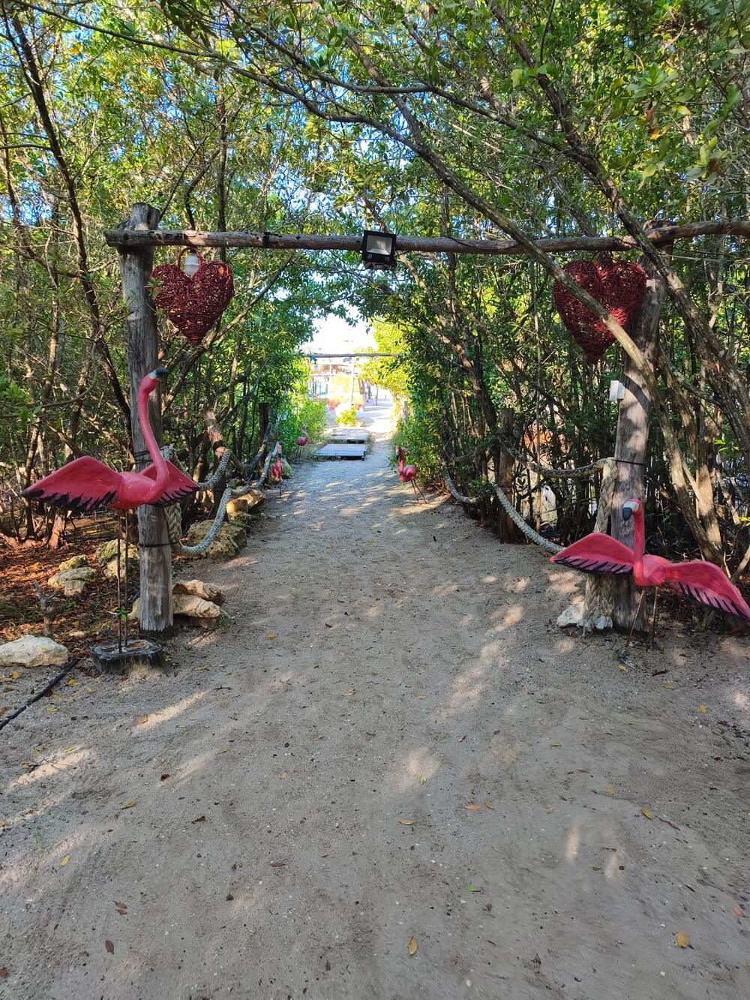
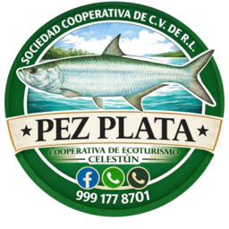
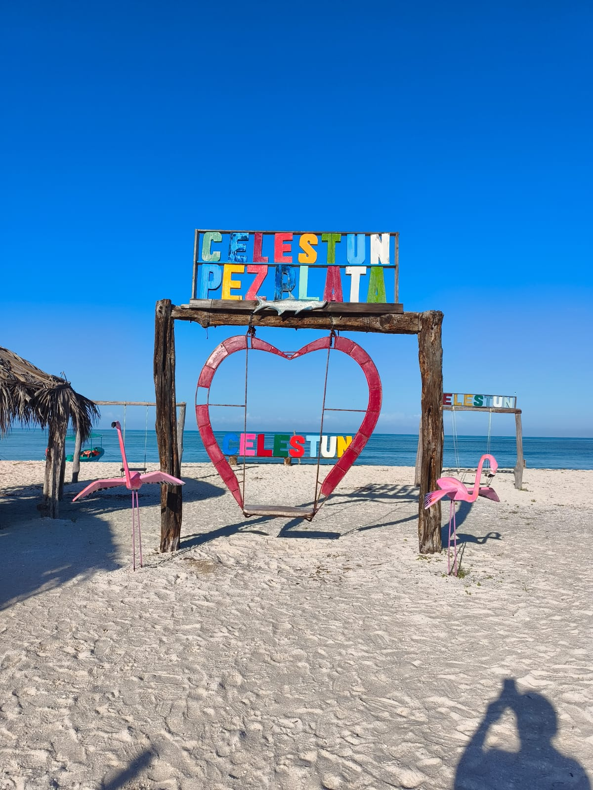
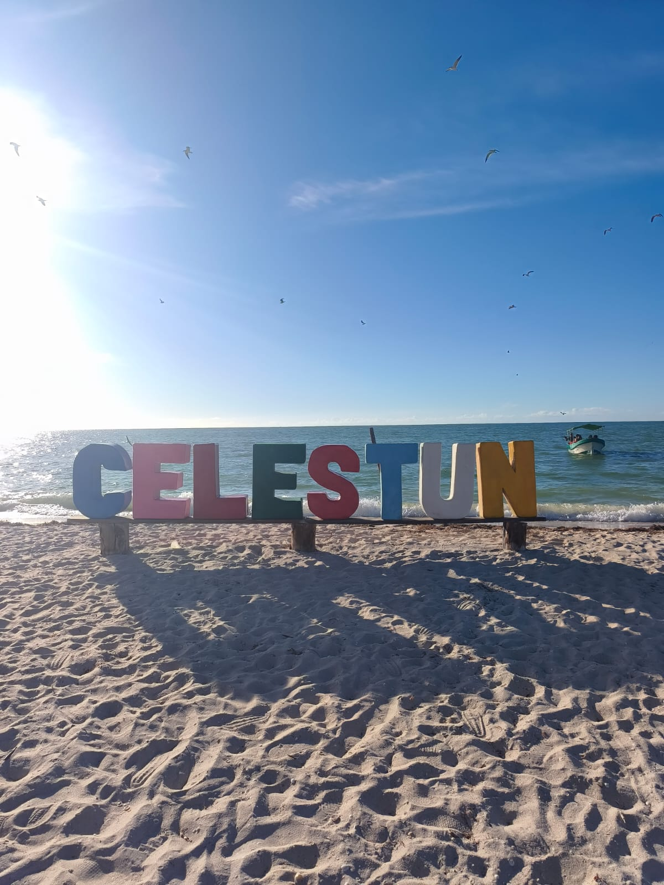
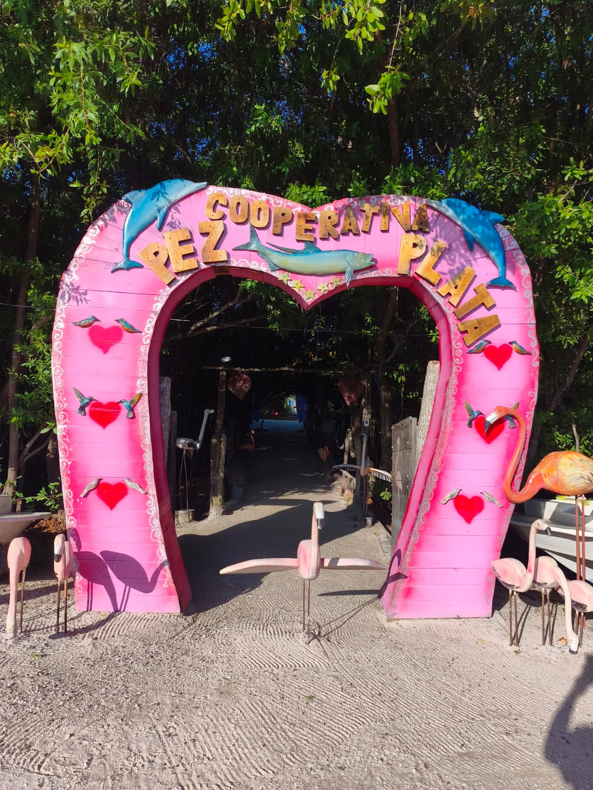
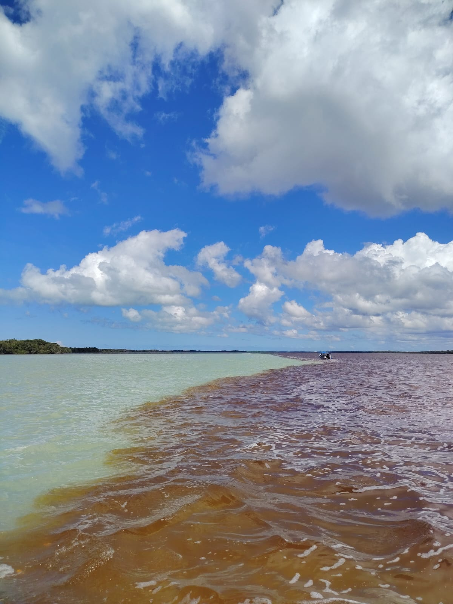
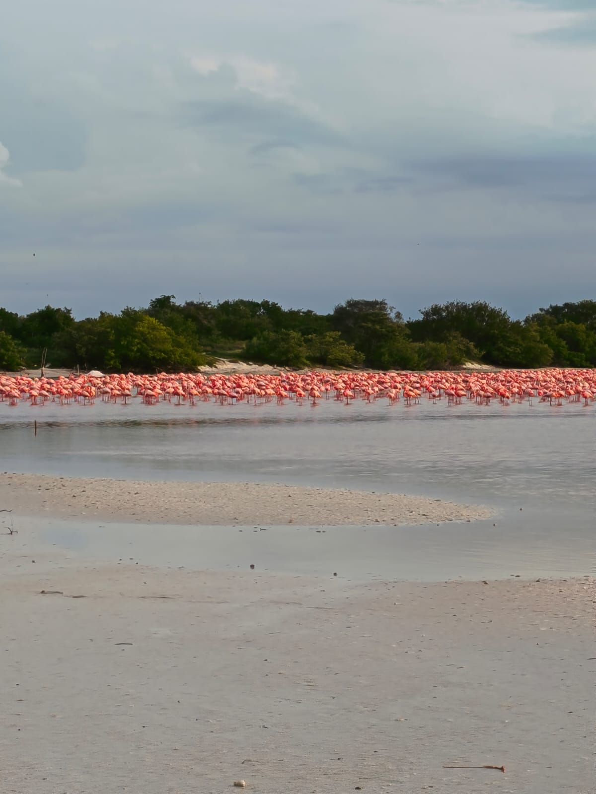
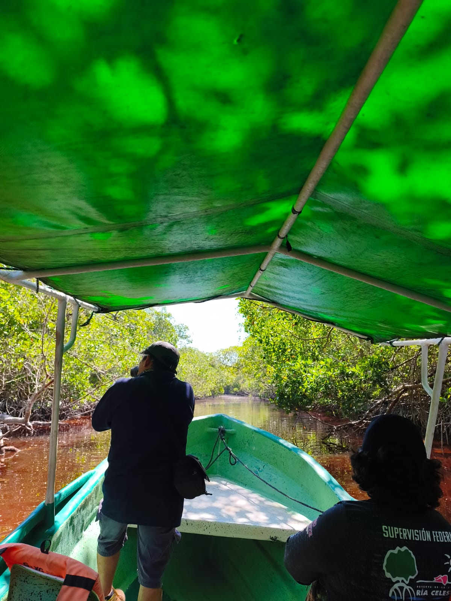
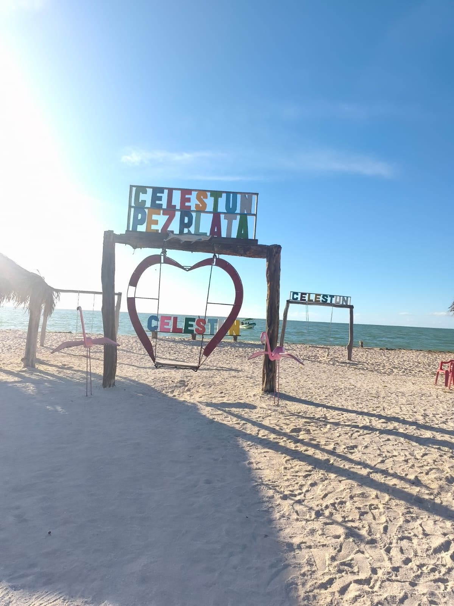

01
Parque ecológico en el manglar
Empiezas a pie, dentro del manglar. Con un poco de suerte te cruzas con tejones, cocodrilos y tortugas en su hábitat.

Zarpando hacia la ría…
0%
Cooperativa de ecoturismo · Celestún, Yucatán
Dos horas entre manglares, playas vírgenes, flamencos y un ojo de agua, con guía certificado a bordo. Empiezas en Playa Columpio, frente al mar.



El recorrido
Hay lugares que se visitan. Otros se navegan. En Celestún la ría se abre entre manglares, el mar se vuelve turquesa y los flamencos pintan el horizonte de rosa.
La ruta
Baja con el scroll y navega la ruta. Cada parada la explica tu guía desde la lancha.

Empiezas a pie, dentro del manglar. Con un poco de suerte te cruzas con tejones, cocodrilos y tortugas en su hábitat.
Subes a la lancha y llegas a unas ruinas que tu guía te cuenta desde el agua.
Arena blanca, mar abierto y cero prisa.

Aquí se ve a simple vista: el agua de la ría y la del mar se encuentran, cada una con su color. Tu guía te explica por qué.

Bandadas rosadas caminando sobre el agua. La parada que todos quieren fotografiar.

La lancha se desliza bajo un techo verde de ramas y raíces. Silencio, sombra y reflejos.
Un ojo de agua en plena ría para detenerte, mirar y respirar.
Una isla entera llena de aves, vista desde el agua y sin molestarlas.
Cierras el viaje con un baño maya: el mejor final para dos horas de ría.
La fauna es libre: ningún recorrido es igual a otro.

Playa Columpio
Letreros de colores, flamencos rosas y el mar de fondo: la foto de tu visita a Celestún empieza aquí.
Quiero mi foto en el columpioA bordo
Sombra, brisa y la ría pasando a tu lado.
Cada lancha lleva chalecos. Tú solo disfruta.
La explicación se da desde la lancha, parada por parada.
De ría, mar y aves.
Galería
Así se ve el lugar donde empieza el recorrido.
¿Ya viste suficiente para animarte?
Quiero mi propia postalEn tierra
Estacionamiento, baños, regaderas y una palapa frente al mar para descansar.
Llega tranquilo: hay dónde estacionar.
Baños disponibles en el lugar.
Quítate la sal y la arena después del baño maya.
Un techo de palma con el mar enfrente.
Estaciona, refréscate y zarpa.
Confianza
Tu recorrido va con guías certificados y con libreta de capitán, registrados en la capitanía de puerto. Tú solo mira y pregunta.
GUÍA CERTIFICADO
Libreta de capitán · Capitanía de puerto
Sociedad Cooperativa de C.V. de R.L.
Cooperativa de ecoturismo Celestún
Reservar
Cuéntanos cuántos son y qué día quieres ir.
Atendemos de 6 AM a 5 PM.
Estaciona en Playa Columpio, sube a la lancha y deja que tu guía haga el resto.
Preguntas
El recorrido dura 2 horas.
Lancha con techo, chalecos y un guía que explica todo el recorrido. Pasas por parque ecológico, ruinas, playas vírgenes, flamencos, túnel de manglares, ojo de agua, isla de pájaros y baño maya.
Sí: estacionamiento, baños, regaderas y palapa frente al mar.
De 6 AM a 5 PM.
Sí, son guías certificados con libreta de capitán, registrados en capitanía de puerto.
Escríbenos por WhatsApp y te compartimos las tarifas.
En Celestún, Yucatán, en Playa Columpio.
Contacto
Cuéntanos cuándo quieres ir y te respondemos por WhatsApp.
Por ahora puedes encontrarnos en Celestún, Yucatán, en Playa Columpio.